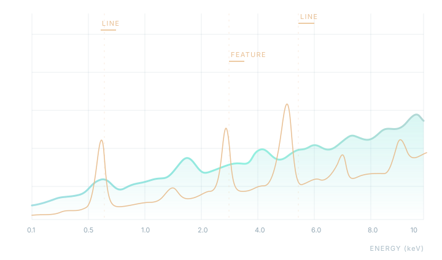

Native photoionization engine
Execute XSTAR calculations with a native C++ runtime using the XSTAR atomic database and FORTRAN-referenced numerical behavior.
xstar-cppX-ray photoionization modeling with Python and native C++, built around the XSTAR atomic data and carefully compared with the original FORTRAN XSTAR.
Run photoionized plasma models, produce FITS spectra, and build XSPEC table models—from a single calculation to a parallel grid.

Tools for building, running, and validating XSTAR-based workflows without leaving the Python and C++ ecosystem.
Execute XSTAR calculations with a native C++ runtime using the XSTAR atomic database and FORTRAN-referenced numerical behavior.
xstar-cppUse Python interfaces and command-line utilities to manage models, atomic data, native backends, and results.
Python API + CLIPublish spectra, ion populations, line diagnostics and FITS table models designed for X-ray spectral analysis.
FITS · XSPECRun independent XSTAR jobs through local-process scheduling or opt-in MPI orchestration on supported HPC systems.
xstar-xspec · MPIFrom a single photoionization model to reproducible grids of spectra ready for XSPEC.
Model parameters and external XSTAR atomic data
xstar.parNative C++ photoionization and thermal calculations
xstar-cppLocal process pool or optional true MPI grid
xstar-xspecFITS spectra, diagnostic products and XSPEC tables
*.fitsInstall the package, verify your runtime, and point it to the official XSTAR atomic data.
$ conda install -c conda-forge xstar-tools$ python -m pip install xstar-toolsxstar-cpp \
--input xstar.par \
--data-dir /path/to/xstar/data \
--output-dir run_xstar Atomic data are external. Models require the official XSTAR atdb.fits and coheat.dat files. Windows native builds use MSYS2 UCRT64; conda-forge does not support Windows. Read the installation & data guide ↗
xstar-tools is developed against the official FORTRAN XSTAR reference, with numerical regression tests spanning atomic processes, thermal balance, ion populations, and published spectral products.
What is XSTAR? XSTAR is the astrophysical software developed to calculate the physical conditions and emission spectra of photoionized gas. The original FORTRAN program is distributed by NASA HEASARC through HEASoft. xstar-tools is an independent open-source Python/C++ implementation and companion toolkit—not the official FORTRAN distribution. The project distinguishes scientific equivalence from platform packaging or installation checks.
Read the scientific parity policyNative build and packaging qualification covers Linux x86-64 and ARM64, macOS on Apple Silicon and Intel, and Windows via MinGW/UCRT64. Optional true MPI targets supported HPC environments.
Everything you need to understand, use, and contribute to the project.